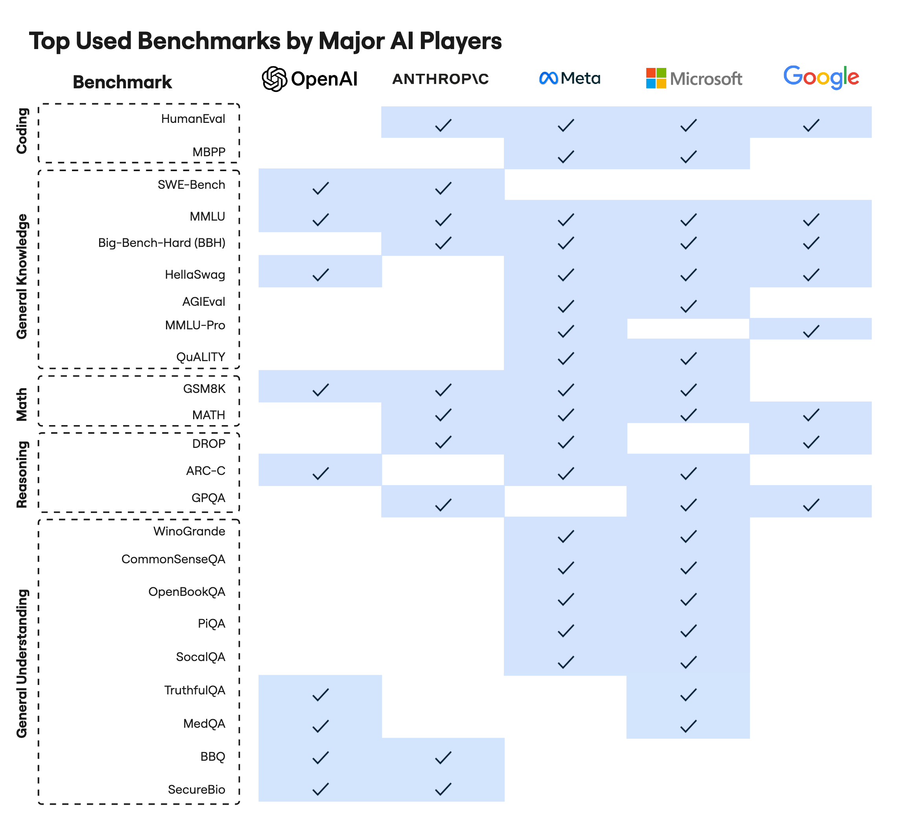
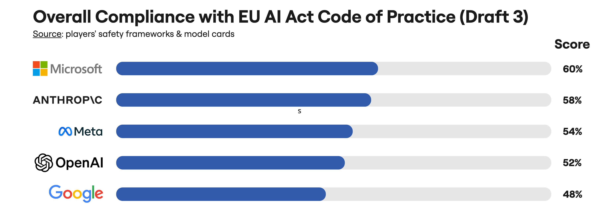

The rapid advancement of artificial intelligence (AI) demands robust evaluation frameworks, especially with emerging regulations like the EU AI Act and its forthcoming Code of Practice (CoP). AI developers rely on a suite of established benchmarks (e.g., MMLU, HellaSwag) to measure progress and safety. However, these benchmarks were often designed before comprehensive regulations existed, creating a potential and dangerous disconnect. Are we testing for the capabilities and risks that regulators and society are most concerned about?
This study systematically analyzes the coverage of widely-used AI benchmarks against the EU AI Act's specified model capabilities, propensities, and affordances. Using a mixed-methods approach combining systematic literature review, multi-Large Language Model (LLM) content analysis, and expert validation, this research aims to identify and quantify these critical evaluation gaps. Our findings will highlight underrepresented high-risk categories in AI assessment, providing an empirical basis for aligning benchmark development with regulatory compliance and fostering safer AI.
Our study employs a rigorous, three-phase mixed-methods design to ensure a comprehensive and reliable assessment of benchmark coverage.
A stratified sample of the industry's most widely-used benchmarks was selected, ensuring representation across general capabilities, safety, fairness, and reasoning. The table below details the selected benchmarks and the major AI labs that report using them for model evaluation.
A detailed evaluation framework based on the EU AI Act and emerging Codes of Practice (CoP) was developed and refined with expert consultation. This framework categorizes regulatory concerns into three main areas, providing a structured lens through which to analyze benchmark content:
While the full analysis is ongoing, our preliminary work and understanding of the landscape lead us to anticipate significant coverage gaps. We expect to find that most benchmarks focus heavily on performance for standard capabilities (e.g., language understanding, basic reasoning) while systematically under-testing for high-risk capabilities and propensities identified in the AI Act CoP. The chart below illustrates our anticipated findings, highlighting which areas are likely to be evaluation blind spots.
In addition to the main gap analysis, this research will enable other key visualizations:
The findings from this research will have direct and actionable implications for key groups in the AI ecosystem:
@inproceedings{prandi2025bench2cop,
author = {Prandi, Matteo and Bisconti, Piercosma and Suriani, Vincenzo},
title = {Bench-2-CoP: Aligning AI Evaluation with the EU AI Act Code of Practice},
booktitle = {Proceedings of the AAAI/ACM Conference on AI, Ethics, and Society (AIES)},
year = {2025},
}